vignettes/MLHO_for_PheWAS.Rmd
MLHO_for_PheWAS.RmdInstall and load the required packages:
if(!require(pacman)) install.packages("pacman")
#> Loading required package: pacman
pacman::p_load(data.table, devtools, backports, Hmisc, tidyr,dplyr,ggplot2,plyr,scales,readr,Rmisc,
httr, DT, lubridate, tidyverse,reshape2,foreach,doParallel,caret,gbm,lubridate,praznik)This document demonstrates how you can use MLHO in iterative modeling to perform phenome-wide association studies.
Again, I will use the syntheticmass data, which I downloaded and prepared according to MLHO input data model from SyntheticMass, generated by SyntheaTM, an open-source patient population simulation made available by The MITRE Corporation.
data("syntheticmass")##Iterative MLHO implementation
To identify features that are useful for your prediction task, you can iteratively apply MLHO so the train-test sampling is repeated. In function mlho.it this is possible. The MSMR.lite and mlearn functionalities are all included in this function.
See the help to learn more about parameters.
data.table::setDT(dbmart)
dbmart[,row := .I]
dbmart$value.var <- 1
mlho.features <- mlho.it(dbmart,
labels = labeldt,
dems,
test.sample = 25,
MSMR.sparsity=0.001,
MSMR.topn=300,
mlearn.note="mlho phewas test run",
mlearn.aoi="prediabetes",
multicore=TRUE,
iterations=5)
#> [1] "iteration 1"
#> [1] "step - 1: sparsity screening!"
#> [1] "step 2: JMI dimensionality reduction!"
#> [1] "the modeling!"
#> Loading required package: pROC
#> Type 'citation("pROC")' for a citation.
#>
#> Attaching package: 'pROC'
#> The following objects are masked from 'package:stats':
#>
#> cov, smooth, var
#> Loading required package: PRROC
#> Loading required package: ModelMetrics
#>
#> Attaching package: 'ModelMetrics'
#> The following object is masked from 'package:pROC':
#>
#> auc
#> The following objects are masked from 'package:caret':
#>
#> confusionMatrix, precision, recall, sensitivity, specificity
#> The following object is masked from 'package:base':
#>
#> kappa
#> Setting levels: control = N, case = Y
#> Setting direction: controls < cases
#>
#> NOTE: Coefficients from a Binomial model are half the size of coefficients
#> from a model fitted via glm(... , family = 'binomial').
#> See Warning section in ?coef.mboost
#> [1] "iteration 1 done!"
#> [1] "iteration 2"
#> [1] "step - 1: sparsity screening!"
#> [1] "step 2: JMI dimensionality reduction!"
#> [1] "the modeling!"
#> Setting levels: control = N, case = Y
#> Setting direction: controls < cases
#>
#> NOTE: Coefficients from a Binomial model are half the size of coefficients
#> from a model fitted via glm(... , family = 'binomial').
#> See Warning section in ?coef.mboost
#> [1] "iteration 2 done!"
#> [1] "iteration 3"
#> [1] "step - 1: sparsity screening!"
#> [1] "step 2: JMI dimensionality reduction!"
#> [1] "the modeling!"
#> Setting levels: control = N, case = Y
#> Setting direction: controls < cases
#>
#> NOTE: Coefficients from a Binomial model are half the size of coefficients
#> from a model fitted via glm(... , family = 'binomial').
#> See Warning section in ?coef.mboost
#> [1] "iteration 3 done!"
#> [1] "iteration 4"
#> [1] "step - 1: sparsity screening!"
#> [1] "step 2: JMI dimensionality reduction!"
#> [1] "the modeling!"
#> Setting levels: control = N, case = Y
#> Setting direction: controls < cases
#>
#> NOTE: Coefficients from a Binomial model are half the size of coefficients
#> from a model fitted via glm(... , family = 'binomial').
#> See Warning section in ?coef.mboost
#> [1] "iteration 4 done!"
#> [1] "iteration 5"
#> [1] "step - 1: sparsity screening!"
#> [1] "step 2: JMI dimensionality reduction!"
#> [1] "the modeling!"
#> Setting levels: control = N, case = Y
#> Setting direction: controls < cases
#>
#> NOTE: Coefficients from a Binomial model are half the size of coefficients
#> from a model fitted via glm(... , family = 'binomial').
#> See Warning section in ?coef.mboost
#> [1] "iteration 5 done!"here are your features and their ORs:
datatable(dplyr::select(mlho.features,DESCRIPTION), options = list(pageLength = 5), filter = 'bottom')##Computing MLHO confidence scores (CS)
As an alternative to p-value adjustment, we have developed a method for computing confidence scores for features that MLHO identifies, using mlho.features file saved above.
mlho.scores <- mlho.cs(mlho.features)the confidence score (cs) is based on the number of iterations and considers consensus in a feature identified as positive/negative in each iteration. For our PASC article, we used features with cs>80. For this demonstration, let’s do cs >= 80. We will use these features to run a GLM model without any regularization to obtain multivariate coefficients.
mlho.features <- c(as.character(subset(mlho.scores$features,mlho.scores$cs >= 80)))we got 6 features for our multivariate GLM model – down from 398.
Look at MLHO Vanilla implementation article to refresh these next steps. For the purpose of extracting the GLM coefficients, we implement mlearn slightly differently, where there’s no test set and the model is developed on the entire population. To do this we set dat.train to NULL.
dbmart <- subset(dbmart,dbmart$phenx %in% mlho.features)
setDT(dbmart)
dbmart[,row := .I]
dbmart$value.var <- 1
uniqpats <- c(as.character(unique(dbmart$patient_num)))
GLM.data <- MSMSR.lite(MLHO.dat=dbmart,patients = uniqpats,sparsity=NA,jmi = FALSE,labels = labeldt)
GLM.output <- mlearn(dat.train=GLM.data,
dat.test=NULL,
dems=dems,
save.model=FALSE,
classifier="GLM",
note="extracting_coefficients",
aoi="prediabetes",
multicore=TRUE)
#> [1] "the modeling!"
#> Waiting for profiling to be done...
datatable(GLM.output, options = list(pageLength = 5), filter = 'bottom')You can see that off all the 6 features that MLHO identified with confidence score >= 80, a GLM model found 4!
Now let’s visualize the mean coefficients.
dbmart.concepts <- dbmart[!duplicated(paste0(dbmart$phenx)), c("phenx","DESCRIPTION")]
GLM.output <- data.frame(merge(GLM.output,dbmart.concepts,by.x="features",by.y ="phenx",all.x=T))
GLM.output$DESCRIPTION <- ifelse(is.na(GLM.output$DESCRIPTION),GLM.output$features,GLM.output$DESCRIPTION)
(plot<- ggplot(GLM.output) +
geom_segment(
aes(y = 1,
x = reorder(DESCRIPTION,OR),
yend = OR,
xend = DESCRIPTION),
size=0.5,alpha=0.5) +
geom_point(
aes(x=reorder(DESCRIPTION,OR),y=OR),
alpha=0.5,size=2,color="red") +
theme_minimal()+
scale_y_continuous(limits=c(0,10))+
coord_flip()+
labs(y="Odds Ratio",x=""))
#> Warning: Removed 1 rows containing missing values (geom_segment).
#> Warning: Removed 1 rows containing missing values (geom_point).